Если вы посмотрите на общую раздутость современного софта, загружаемые 100 гигабайтные игры, ежегодную Nvidia X090 дающую +20% год от года, и 20-ядерные процессоры, то со стороны может показаться, что оптимизация производительности неважно чего, будь то игры или другой софт, казалось бы, утратила свою актуальность. В эпоху безнаказанной производительности аппаратной части можно расплескивать хоть половину этой мощи, и пользователь этого даже не заметит. Это все может и верно, если вы не делаете игру. Почему же тогда на этих двадцати ядрах, фризит и тормозит (хорошо что не вылетает часто) игра выпущенная два года назад?
Почему тормозит я вам не скажу: возможно разработчики, которые делали её (на не самом новом движке, надо сказать) просто делали игру и не задумывались о рядовых игроках, которые сидят на пятилетнем железе, хотя даже пятилетнее железо уделывает приставки текущего поколения. Возможно это другая причина — когда твоя рабочая машина с 64 гибайтами оперативки и 4080 на борту тянет редактор, то беспокоиться об игроках можно начинать после патча первого дня.
При том, что все эти 30 — 60 — 120 — 200 фпс в играх, это чисто маркетинговый показатель, это время с которой движок может создавать фреймы для видеокарты, но движок это не только картинка, есть физика — а она как работала на 30 фпсах 10 лет назад, так и работает. Или звуковая подсистема, которая вообще своей отдельной жизнью живет в своих приоритетных тредах, в большинстве мы просто кидаем туда меседжи с настройками и номером фрейма, чтобы засинхронизировать это с картинкой. Это сложно, но решаемо, но звук не привязан к картинке.
Input, так он тоже живет отдельно в своих тредах, и точно так же шлет месседжи только уже другим системам. Разные системы кеширования и буферизации данных, на них тоже можно не обращать внимания, потому что современный рендеринг почти весь отложенный, все что можно отложить, будет отложено — модели, текстуры, шейдеры — будет в каком‑то неопределенном состоянии, вроде смазанной текстуры или common шейдера, который её натянет на модель. А потом по мере загрузки ресурсов уже подтягиваются настоящие данные.
С некоторой натяжкой сюда можно отнести игровую логику, которая разбухла от блупринтов и разных визуальных систем разработки, но там опять же все delta time ориентированный код, никакой привязки к фпсам нет. Игровая логика спокойно может пропустить и два и три, вплоть до десятков фреймов, какие‑то заметные игроку последствия будут видны только при логических ошибках дизайнеров, вроде зависших в т-позе нпс.
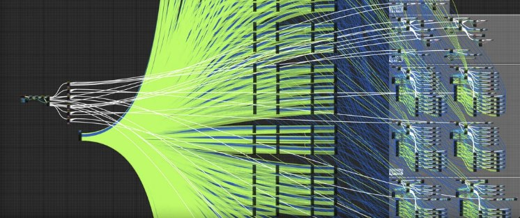
Еще есть физическая симуляция, рендер, обработка геометрии уровня и анимации, и системы дебага игры. И вот тут как раз в силу большого объёма данных, например когда нужно каждый фрейм собирать и сохранять все данные от всех моделей на сцене для последующего анализа и отладки, появляется много веских причин уделять время оптимизации кода. Или системы трекинга аллокаций, которая отслеживает все выделения и освобождения памяти во время работы. И именно в таких системах отладки внимание уделяется коду с низкой задержкой, которые неактуальны для приложений общего назначения, что-то похожее есть в системах высокочастотной торговли (HFT) или системах массового обслуживания, но только там сэкономленные такты приносят реальную прибыль или сокращают стоимость содержания оборудования.
В игродеве же мы учимся ценить человеческое время, время дизайнера, который сотни раз за день запускает игровую сцену, когда настраивает или оттачивает игровой ИИ. Время программиста, которому вместе с багом прилетает не только стектрейс, дамп и возможно описание бага, но и реплей сцены за две минуты до наступления бага, размер дампа около двадцати гигабайт, размер реплея еще около двадцати, но только реплей содержит минидампы каждого фрейма, как я уже написал выше за последние две минуты. И тут маленькие победы и оптимизации превращаются в минуты реального времени распаковки и обработки огромных объемов данных (в рамках одиночного пк объемных), что требует крайне быстрых алгоритмов и порою разных трюков и хаков. А что у нас есть самое мощное для стрельбы битами по ногам багам? конечно C++.
О чем статья
Многие из оптимизаций, перечисленных ниже, достаточно очевидны, такие как предварительный разогрев кэшей, использование constexpr, разворачивание циклов и инлайнинг. Другие шаблоны менее очевидны, такие как hotpath, усечение ветвлений, изоляция редко выполняемого кода, избавление от логов, тренировка блока предсказания ветвлений.
А еще есть интересные моменты при сравнении со знаком и без знака, смешивание типов данных с плавающей точкой и, разные методы программирования без блокировок, вроде использование кольцевого буфера. Я не буду касаться в этой статье работы с невыровненными обращениями к памяти, во-первых это уже было описано тут, во-вторых это тема для отдельной статьи и на хабре было описано не раз. Когда микро оптимизации экономят минуты реального времени, может они уже не микро? И конечно, всем кто хочет апеллировать этой статьей в своих беседах, пожалуйста сначала проверьте эти места профайлером, профайлер пожалуй это единственный достоверный источник таких оптимизаций, и то не всегда.
Warming cache (Разогрев кэша)
Нужно, чтобы минимизировать время доступа к памяти и повысить отзывчивость алгоритмов. Для этого данные предварительно загружаются в кэш ядра до их непосредственного использования, пользоваться надо с осторожностью, потому что своими пальцами-молотками вполне можно сломать блок предсказаний, локально выиграем 5% производительности, но поломаем соседний алгоритм и потеряем там больше. По опыту оптимизации на реальных данных, работает на объектах размеры которых не превышают 4х размера кэш линии, дальше идет деградация скорости и затраты на разогрев начинают влиять на сам алгоритм.
Код бенчмарка
constexpr int kSize = 20000000;
std::vector<int> cache_data_cold(kSize);
std::vector<int> cache_indices_cold(kSize);
std::vector<int> cache_data_warm(kSize);
static void BM_CacheDataCold(benchmark::State& state) {
// Random indices to avoid auto prefetching next lines to cache
for(auto& index : cache_data_cold) {
index = (index * 3 + 1) % kSize;
}
for (auto _ : state) {
int sum = 0;
// Access data random, cache missing guarantee
for (const auto &idx: cache_indices_cold) {
benchmark::DoNotOptimize(sum += cache_data_cold[idx]);
}
benchmark::ClobberMemory();
}
}
BENCHMARK(BM_CacheDataCold);
static void BM_CacheDataWarm(benchmark::State& state) {
// Linear accessing data in sequential order, that use common cpu algoritms cache prefetching
int sum_warm = 0;
for (const auto &i: cache_data_warm) {
benchmark::DoNotOptimize(sum_warm += i);
}
benchmark::ClobberMemory();
// Run benchmark body
for (auto _ : state) {
int sum = 0;
// Access data in sequential order again
for (const auto &i: cache_data_warm) {
benchmark::DoNotOptimize(sum += i);
}
benchmark::ClobberMemory();
}
}
BENCHMARK(BM_CacheDataWarm);Run on (24 X 4293 MHz CPU s)
CPU Caches:
L1 Data 32 KiB (x12)
L1 Instruction 32 KiB (x12)
L2 Unified 2048 KiB (x12)
L3 Unified 32768 KiB (x4)
-----------------------------------------------------------
Benchmark Time CPU Iterations
-----------------------------------------------------------
BM_CacheDataCold 33812905 ns 36281250 ns 20
BM_CacheDataWarm 24459255 ns 25250000 ns 24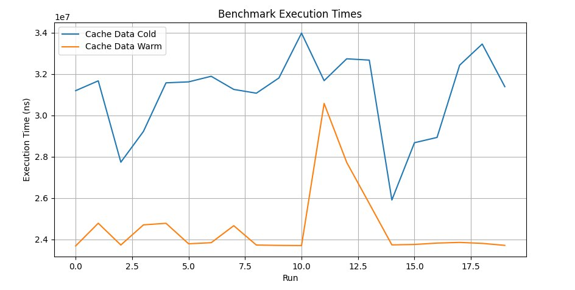
История из жизни: игра использует A* Jump для расчета пути между двумя точками, каждый фрейм для всех динамических объектов сцены с текущей позиции пересчитывается путь с учетом изменений в окружении. Алогоритм работает с ограниченным массивом интов, которые представляют собой дистанцию от центра карты до точки входа, используется для функции эвристики направления, которая дергается для оценки в какую сторону лучше искать на каждом шаге алгоритма. Предварительно пробежавшись по каждому 8 элементу массива получаем почти весь массив загруженный в кэш L3, полная работа алгоритма занимает почти 4мс на фрейме для 8к объектов на карте. Профилирование выявило почти 70% промахов, что приводило к простою алгоритма на ожидании данных, прогрев кеша уменьшил время работы почти до 1.5мс. Игра под спойлером.
Игра под спойлером
Ymir
Диспетчеризация ветвлений (Compile-time Dispatch)
С помощью таких техник, как специализация шаблонов или перегрузка функций, можно оптимизировать пути выполнения на этапе компиляции, что позволяет избежать ветвлений во время выполнения и снижения числа превентивных вычислений спекулятивных веток в ядре. Используется часто, не только для оптимизации времени работы, но и для улучшения структуры кода. Но, повторюсь, не следует менять if на специализацию или другие трюки, без четкого понимания последствий. Самые нижние графики и самые лучшие времена получились при отказе от динамического создания объектов, что как бы говорит нам, что не условное выполнение виновник торжества, но свои 5% перфа условные ветвления также забирают.
Код бенчмарка
class Function {
public:
virtual ~Function() {}
virtual int result() const = 0;
};
class Function1 : public Function {
public:
int result() const override { return 1; }
};
class Function2 : public Function {
public:
int result() const override { return 2; }
};
// Benchmark for runtime dispatch
static void BM_RuntimeFunction(benchmark::State& state) {
Function* obj = state.range(0) == 1 ? (Function*)new Function1 : (Function*)new Function2;
for (auto _ : state) {
benchmark::DoNotOptimize(obj->result());
}
delete obj;
}
BENCHMARK(BM_RuntimeFunction)->Arg(1)->Arg(2);
template <typename T>
static void BM_CompileTimeFunctionNew(benchmark::State& state) {
T *obj = new T;
for (auto _ : state) {
benchmark::DoNotOptimize(obj->result());
}
delete obj;
}
BENCHMARK_TEMPLATE(BM_CompileTimeFunctionNew, Function1);
BENCHMARK_TEMPLATE(BM_CompileTimeFunctionNew, Function2);
// Benchmark for compile-time dispatch
template <typename T>
static void BM_CompileTimeFunction(benchmark::State& state) {
T obj;
for (auto _ : state) {
benchmark::DoNotOptimize(obj.result());
}
}
BENCHMARK_TEMPLATE(BM_CompileTimeFunction, Function1);
BENCHMARK_TEMPLATE(BM_CompileTimeFunction, Function2);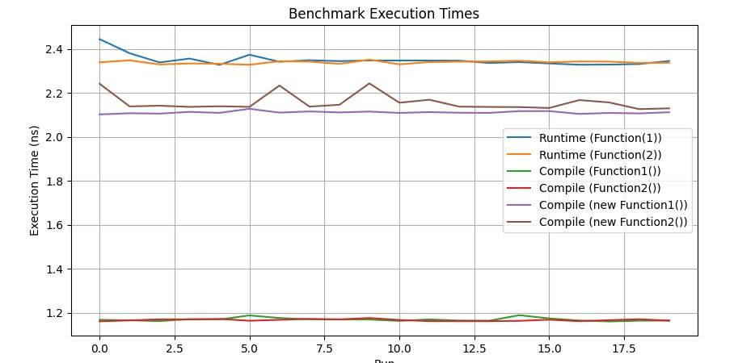
История из жизни: менеджер эффектов использовал перегрузку функции отрисовки для разного типа объектов, искры, брызги, песчинки, пыль и т.д. На пк билде никаких проблем не было, на мощном (4GHz) процессоре это все обрабатывалось влет. При портировании на Nintendo Switch выявились особенности слабенького (800Mhz) процессора, который не успевал это все перемалывать на загруженных сценах. Сначала пробовали урезать количество эффектов, но картинка стала выглядеть бедновато. После профилирования выяснилось что 7% времени работы уходит на переход по ифам, чтото около 50 ветвлений, и еще порядка 10% времени уходит на вызов перегруженой функции. Подготовка эффектов для отрисовки на консоли занимала 5мс на фрейм, после избавления от ветвлений и вызова виртуальных функций удалось почти полностью вернуть эффекты из пк версии, и снизить время до 3мс. Игра под спойлером.
Игра под спойлером
Blades Of Time (NX port)
Разворачивание циклов (Loop unrolling)
Циклы разворачиваются во время компиляции для уменьшения накладных расходов на управление и улучшения производительности, особенно для небольших циклов с известным количеством итераций. Пользоваться надо с осторожностью, компиляторы достаточно умные и сами разворачивают циклы где это возможно, и не всегда можно проанализировать и увидеть, что этот участок кода может быть оптимизирован таким образом, проверив профайлером этот участок кода. Метод имеет ограниченное применение, и лучше всего себя показывает на линейных массивах с простыми данными, чем больше расстояние между элементами массива, к которым нужно обратиться, тем менее прирост произвотельности мы получаем. Тем не менее, если паттерн смещение определяется процессором или программистом, то это достаточная причина для анализа и переделки текущего участка кода, и не забывайте про использование профайлера.
Код бенчмарка
static void BM_RawLoopLogic(benchmark::State& state) {
for (auto _ : state) {
int result = 0;
for (int i = 0; i < state.range(0); ++i) {
result += i;
}
benchmark::DoNotOptimize(result);
}
}
BENCHMARK(BM_RawLoopLogic)->Arg(1000);
static void BM_UnrolledLoopLogic(benchmark::State& state) {
for (auto _ : state) {
int result = 0;
for (int i = 0; i < state.range(0); i += 4) {
result += i + (i + 1) + (i + 2) + (i + 3);
}
benchmark::DoNotOptimize(result);
}
}
BENCHMARK(BM_UnrolledLoopLogic)->Arg(1000);---------------------------------------------------------------------------
Benchmark Time CPU Iterations
---------------------------------------------------------------------------
BM_RawLoopLogic/1000_mean 540 ns 541 ns 20
BM_RawLoopLogic/1000_median 539 ns 547 ns 20
BM_UnrolledLoopLogic/1000_mean 171 ns 171 ns 20
BM_UnrolledLoopLogic/1000_median 171 ns 173 ns 20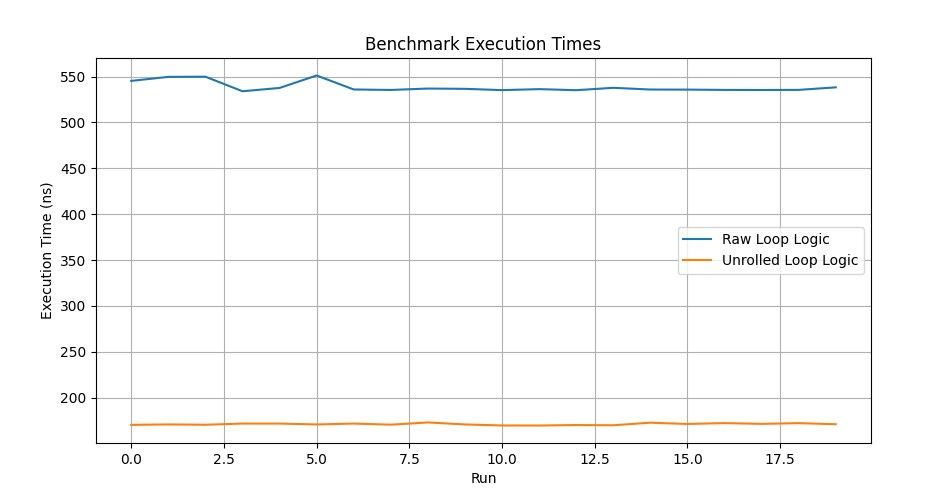
История из жизни: когда еще clang/msvc не так агрессивно выполняли оптимизацию, приходилось прибегать к таким трюкам, чтобы заставить игру работать на слабеньких девайсах. Игра была написана на marmalаde и ориентирована на iPhone6, но в какой-то момент решили оЩастливить и аудиторию пятёрок и даже замахнуться на 4s. Пятерка еще как‑то справлялась выдавая 23–25 фпс, и играть было не то чтобы комфортно, но можно, а четверка выше 20 фпс не «могла» от слова совсем. 23 Фпс получили снижением качества моделей, но дальше снижать уже было некуда, ибо и так уже было мыло. Профайлер показал, что очень многие места хорошо оптимайзятся разворачиванием циклов, сначала пробовали их искать руками, потом плюнули на это неблагодарное занятие, с помощью питона, макросов, скриптов и какой‑то матери прошлись по всей кодовой базе мармелада и частично развернули циклы. Не без боли, но через неделю работы напильником заветные два фпс были получены, и мы добрались до 25 фпс для апрува в эплстор. Игра под спойлером.
Игра под спойлером
Согласование знаков операндов (Signed/Unsigned)
Согласованность знака в сравнениях позволяет избежать проблем с производительностью, связанных с преобразованием к общему типу, и поддерживает использование более эффективных инструкций при генерации кода. C другой стороны, что такое разница в 1нс на миллион операций, когда у нас текстуры 4К грузятся за миллисекунды. Правило использовать согласованные по знакам операнды пришло из эпохи playstation 3, с её очень своенравным cell процессором, мощным, но в некоторых моментах сложным для оптимизации, и использование таких операндов приводило к тяжеловесным ассемблерным инструкциям приведения типов от одного к другому. Ловятся специальными флагами компиляции почти на всех компиляторах. В современном железе такого уже не встретить, правда ведь?
Код бенчмарка
int func_signed_signed(int i) {
int j = 0;
for (signed k = i; k < i + 10; ++k) {
++j;
}
return j;
}
int func_unsigned_signed(int i) {
int j = 0;
for (unsigned k = i; k < i + 10; ++k) {
++j;
}
return j;
}
static void BM_SignedSigned(benchmark::State& state) {
for (auto _ : state) {
int i = rand() % 5;
volatile int result = func_signed_signed(i);
}
}
static void BM_UnsignedSinged(benchmark::State& state) {
for (auto _ : state) {
int i = rand() % 5;
volatile int result = func_unsigned_signed(i);
}
}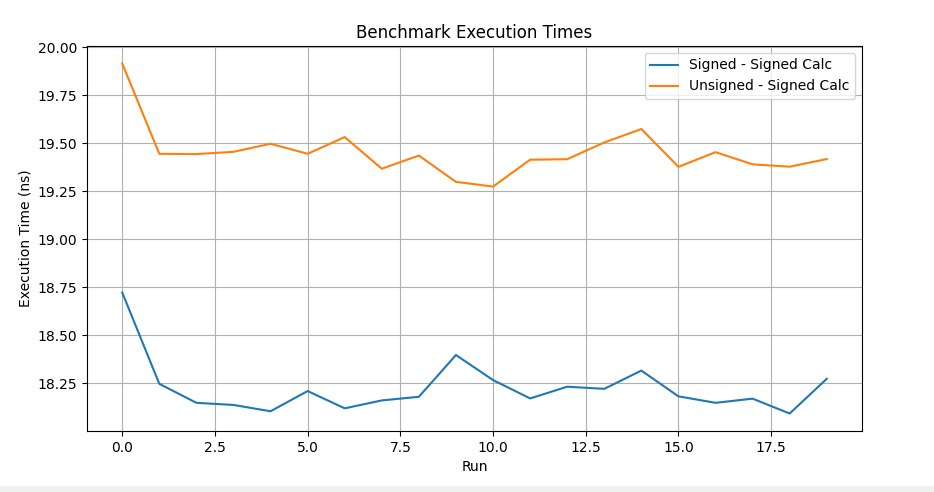
-------------------------------------------------------------------
Benchmark Time CPU Iterations
-------------------------------------------------------------------
BM_SignedSigned (med) 18.7 ns 18.8 ns 37333333
BM_UnsignedSigned (med) 19.2 ns 19.3 ns 37333333Согласование типов операндов (Float/Double)
Согласованность типов float и double в вычислениях предотвращает неявные преобразования типов, потенциальную потерю точности и замедление выполнения. Сложно отлавливаемые примеры проседания перфа, на казалось бы простых и обыденных операциях, зачастую недектируемые за счет размазанности по коду. Ловятся специальными флагами компиляции и поиском по ассемблерному листингу функций с определенными сигнатурами. И если на скорость выполнения еще можно закрыть один глаз, то с потерей точности все гораздо хуже, ошибки при использовании такого кода будут накапливаться на интервале нескольких секунд, а то и минут, вызывая наведенные ошибки в совершенно случайных местах.
Код бенчмарка
static void BM_FloatDouble(benchmark::State& state) {
for (auto _ : state) {
float a, b = rand();
a = b * 1.23;
}
}
// Register the function as a benchmark
BENCHMARK(BM_FloatDouble);
static void BM_FloatFloat(benchmark::State& state) {
for (auto _ : state) {
float a, b = rand();
a = b * 1.23f;
}
}
BENCHMARK(BM_FloatFloat);Немного поясню что происходит в бенчмарке, смешивание типов float и double приводит к незначительным затратам времени выполнения из-за необходимости преобразования всех типов к более общему во всем выражении. Если вычисление включает и float и double, требуются неявные преобразования переменной float(а) к переменной double(а), которая имеет более высокую точность, результат затем, который представлен в виде double(а * 1.23), будет понижен обратно до float, с потерей точности и накоплением ошибки, чтобы соответствовать исходному типу переменной, эти операции добавляют накладные расходы для простейшего кода, и компилятор услужливо делает это прозрачно для программиста. Между тем операции преобразования между float и double достаточно сложные, хоть и реализован на уровне микрокода процессора, и могут влиять на время выполнения, особенно когда такие операции происходят внутри циклов или являются частью сигнатуры вызываемой функций. В современных процессорах затраты на такие преобразования могут быть незначительными для отдельных операций, тем более когда они размазаны по всему потоку выполнения.
----------------------------------------------------------------
Benchmark Time CPU Iterations
----------------------------------------------------------------
BM_FloatDouble 18.6 ns 18.7 ns 37333333
BM_FloatFloat 18.3 ns 18.4 ns 37333333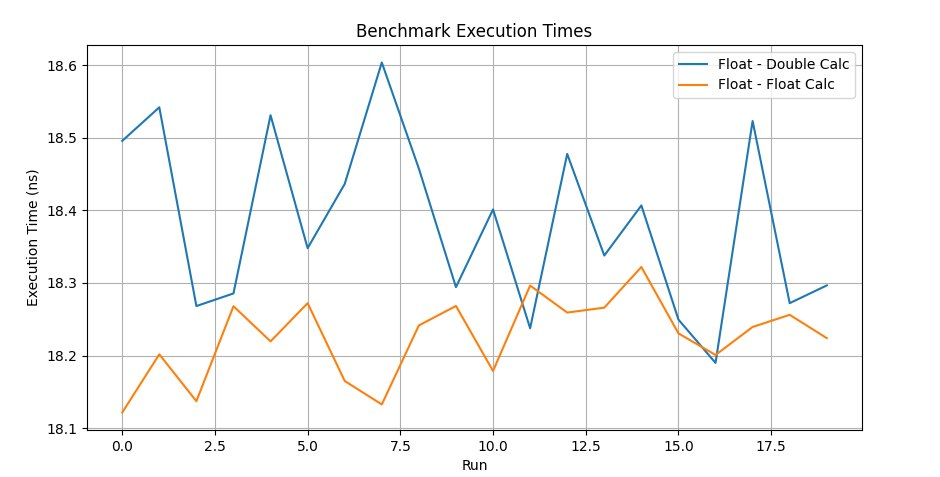
История из жизни: использование операндов signed/unsigned переменных в операторах цикла и смешивание float/double, приводило к неоптимальным операциям на консоли Nintendo Switch, о чем компилятор радостно репортил, но мы до времени не обращали на эти ворнинги внимания. Перед релизом игры, решили поправить ворнинги и получили +2 к FPS и стабильные 30 в хендмоде. Оказалось, что некоторые были в критичных местах в рендере, на x86 это никак не отражалось, а вот на слабеньком железе свича, очень даже. Игра под спойлером.
Снижение сложности ветвлений (Branch Prediction Poison)
Предсказание условных ветвлений позволяет выполнять код спекулятивно, и современные процессоры это хорошо умеют. Но не всегда, например cell на playstation 3 имел ужасный блок предсказания ветвлений, и потери при использовании режима со спекулятивным выполнении составляла до 10%, т.е. выключение это режима на cpu увеличивало производительность игр, ну или вы просто учились всяким трюкам. Уменьшая количество ветвлений вы получаете более стройную логику выполнения (не всегда более читаемую), избавляетесь от ветвлений и кратно улучшаете производительность алгоритма. Это выполняется за счет математических трюков, использования структур данных подходящих для алгоритма, кеширования результатов, анализа путей выполнения и использования профайлера необычными способами.
Код бенчмарка
bool long_way_condition(int i) {
for (int j = 0; j < 10000; ++j) {
benchmark::DoNotOptimize(j);
}
return i % 2 == 0;
}
bool short_way_condition(int i) {
return i % 2 != 0;
}
static void BM_LongConditionFirst(benchmark::State& state) {
for (auto _ : state) {
bool result = false;
for (int i = 0; i < state.range(0); ++i) {
result = long_way_condition(i) || short_way_condition(i);
}
benchmark::DoNotOptimize(result);
}
}
BENCHMARK(BM_LongConditionFirst)->Range(8, 8<<10);
static void BM_ShortConditionFirst(benchmark::State& state) {
for (auto _ : state) {
bool result = false;
for (int i = 0; i < state.range(0); ++i) {
result = short_way_condition(i) || long_way_condition(i);
}
benchmark::DoNotOptimize(result);
}
}
BENCHMARK(BM_ShortConditionFirst)->Range(8, 8<<10);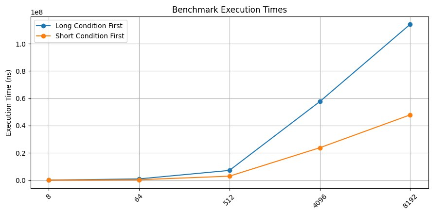
Оптимизация ветвлений (Slowpath Removal)
Техника оптимизации, направленная на минимизацию вызовов в потоке выполнения редко используемых участков кода. Некоторые мои коллеги относят это к предыдущему пункту, но я вынес это в отдельную секцию. К этому случаю, например относится дебажные и диагностические сообщения в лог, которые по своей сути выполняются очень редко, но существенно влияют на общую структуру кода, затрудняя работу оптимизаторов кода. В примере ниже, сохранение (потенциально долгое) ошибки в горячем коде заменено на помещение её в промежуточный буффер, который может быть обработан в соседнем потоке или отдельно в после работы основного алгоритма. Это не повлияло на сам алгоритм, но медленная часть была убрана из быстрого кода, и хотя она вызывалась всего в 10% случаем, но тормозила весь алгоритм условно в 3 раза. Это синтетический пример, который обращает внимание на проблему, но использование, например, логирования ошибок в коде «горячих» алгоритмов, может кардинально сказаться на их скорости, даже если такая ошибка будет случаться в 1% случаев.
Код бенчмарка
static std::map<int, int> orders;
static bool okay = false;
static std::vector<int> errors;
static void save_error_in_report(const std::string& message) {
for (volatile int i = 0; i < 10000; ++i) {
benchmark::DoNotOptimize(i);
}
}
static void removeFromMap(int orderId, std::map<int, int>& orders) {
orders.erase(orderId);
}
static void log(const std::string& message) {
for (volatile int i = 0; i < 10000; ++i) {
benchmark::DoNotOptimize(i);
}
}
static void __declspec(noinline) HandleError() {
errors.push_back((int)"Some errors");
removeFromMap(1, orders);
log("Some error");
}
// Bad scenario.
static void NoHotpath(benchmark::State& state) {
int counter = 0;
for (auto _ : state) {
okay = (++counter % 10 != 0); // 90% of the exec
if (okay) {
// Hotpath
} else {
save_error_in_report("Some errors");
removeFromMap(1, orders);
log("Some errors");
}
}
}
BENCHMARK(NoHotpath);
static void UsingHotpath(benchmark::State& state) {
int counter = 0;
for (auto _ : state) {
okay = (++counter % 10 != 0); // 90% of the exec
if (okay) {
// Hotpath.
} else {
HandleError();
}
}
}
BENCHMARK(с);-----------------------------------------------------------
Benchmark Time CPU Iterations
-----------------------------------------------------------
NoHotpath 15758 ns 15868 ns 14352
UsingHotpath 10597 ns 10798 ns 24578Предсказание ветвлений и спекулятивное выполнение стало одной из точек роста производительности cpu, и блок предсказания может занимать больше всего места на кристалле. Если предсказание точное, оно позволит процессору загружать инструкции из памяти еще до их непосредственного использование, что приводит к более эффективному выполнению.
С другой стороны неверное предсказание ветвления приводит к ситуации, когда процессор будет простаивать до тех пор, пока правильные инструкции и данные не будут загружены из кэша, а в худшем случае и из оперативной памяти. В контексте важности таких возможностей в процессорах, в компиляторах тоже стали доступны инструкции подсказок для ветвлений во время компиляции, таких как __builtin_expect в clang. Эти подсказки могут направлять компилятор на создание более оптимальных структур кода, а могут и не направлять.
Код бенчмарка
int errorCounterA = 0;
bool check_for_error_a() {
// Produce an error once every 10 calls
errorCounterA++;
for (int j = 0; j < 10000; ++j) {
benchmark::DoNotOptimize(j);
}
return (errorCounterA % 10) == 0;
}
bool check_for_error_b() {
for (int j = 0; j < 10000; ++j) {
benchmark::DoNotOptimize(j);
}
return false;
}
bool check_for_error_c() {
for (int j = 0; j < 10000; ++j) {
benchmark::DoNotOptimize(j);
}
return false;
}
void handle_error_a() {
for (int j = 0; j < 10000; ++j) {
benchmark::DoNotOptimize(j);
}
}
void handle_error_b() {
for (int j = 0; j < 10000; ++j) {
benchmark::DoNotOptimize(j);
}
}
void handle_error_c() {
for (int j = 0; j < 10000; ++j) {
benchmark::DoNotOptimize(j);
}
}
void execute_hot_path() {
for (int j = 0; j < 10000; ++j) {
benchmark::DoNotOptimize(j);
}
}
static void Branching(benchmark::State& state) {
errorCounterA = 0;
for (auto _ : state) {
if (check_for_error_a())
handle_error_a();
else if (check_for_error_b())
handle_error_b();
else if (check_for_error_c())
handle_error_c();
else
execute_hot_path();
}
}
// A new setup using flags
enum ErrorFlags {
ErrorA = 1 << 0,
ErrorB = 1 << 1,
ErrorC = 1 << 2,
NoError = 0
};
int errorCounterFlags = 0;
ErrorFlags checkErrors() {
errorCounterFlags++;
return (errorCounterFlags % 10) == 0 ? ErrorA : NoError;
}
void HandleError(ErrorFlags errorFlags) {
if (errorFlags & ErrorA) {
handle_error_a();
}
}
void hotpath() {
for (int j = 0; j < 10000; ++j) {
benchmark::DoNotOptimize(j);
}
}
static void ReducedBranching(benchmark::State& state) {
errorCounterFlags = 0;
for (auto _ : state) {
ErrorFlags errorFlags = checkErrors();
if (errorFlags)
HandleError(errorFlags);
else
hotpath();
}
}
BENCHMARK(Branching);
BENCHMARK(ReducedBranching);Более того, важным подходом в этом случае, становится изоляция обработки ошибок от основной выполняемой частей кода (hotpath), тем самым сокращая количество ветвлений и возможности для неверного предсказания.
-----------------------------------------------------------
Benchmark Time CPU Iterations
-----------------------------------------------------------
Branching 51858 ns 50815 ns 14452
LessBranching 10597 ns 10498 ns 64000Еще немного по этой теме тут.
История из жизни: достаточно известный движок и проект, функция перемножения матриц, вызывается десятки тысяч (любой поворот любой кости на скелете, это минимум одно перемножение матриц) раз на фрейме, оптимизирована по самое нехочу, если бы не эти пять строк кода в начале, которые убивают все оптимизации. Отрезаем все лишнее и вуаля, +3 фпс из воздуха, просто магия. Игра в аттаче, движок я думаю вы узнаете.
matrix3f& matrix3f::mul (const matrix3f& ma, const matrix3f& mb) {
assertq (this);
assertq (&ma);
assertq (&mb);
assertq (this != &ma);
assertq (this != &mb);
_1.m = sse_add(sse_add(sse_add(sse_mul(sse_shfll(ma._1.m, ma._1.m, _MM_SHUFFLE(0,0,0,0)), mb._1.m), sse_mul(sse_shfll(ma._1.m, ma._1.m, _MM_SHUFFLE(1,1,1,1)), mb._2.m)), sse_mul(sse_shfll(ma._1.m, ma._1.m, _MM_SHUFFLE(2,2,2,2)), mb._3.m)), sse_and(ma._1.m, MM_000f_PS));
_2.m = sse_add(sse_add(sse_add(sse_mul(sse_shfll(ma._2.m, ma._2.m, _MM_SHUFFLE(0,0,0,0)), mb._1.m), sse_mul(sse_shfll(ma._2.m, ma._2.m, _MM_SHUFFLE(1,1,1,1)), mb._2.m)), sse_mul(sse_shfll(ma._2.m, ma._2.m, _MM_SHUFFLE(2,2,2,2)), mb._3.m)), sse_and(ma._2.m, MM_000f_PS));
_3.m = sse_add(sse_add(sse_add(sse_mul(sse_shfll(ma._3.m, ma._3.m, _MM_SHUFFLE(0,0,0,0)), mb._1.m), sse_mul(sse_shfll(ma._3.m, ma._3.m, _MM_SHUFFLE(1,1,1,1)), mb._2.m)), sse_mul(sse_shfll(ma._3.m, ma._3.m, _MM_SHUFFLE(2,2,2,2)), mb._3.m)), sse_and(ma._3.m, MM_000f_PS));
return *this;
};Тот самый макрос
#define assertq(expr) {
if (!(expr)) { ::log_fail(context_); ::debug_fail(#expr,__FILE__,, __LINE__); } } ::create_crashdump_func()Игра под спойлером
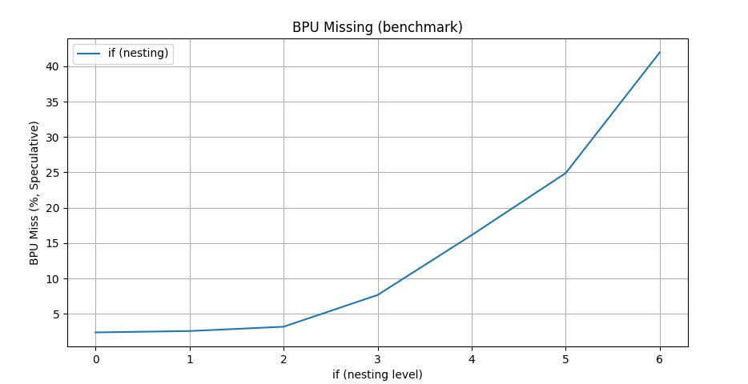
Векторизация алгоритмов (SIMD logic)
Операции «одна инструкция, множество данных» (SIMD) позволяют кратно повысить локальную производительность алгоритмов, значительно ускоряя его векторными и матричными вычислениями. Один их самых востребованных путей оптимизации алгоритмов, который находится буквально под ногами разработчиков, который, к сожалению, они предпочитают не замечать, смотря в сторону процессоров помощнее и оперативки побыстрее.
Код бенчмарка
size_t sse42_strlen(const char* s) {
size_t result = 0;
__m128i* mem = reinterpret_cast<__m128i*>(const_cast<char*>(s));
const __m128i zeros = _mm_setzero_si128();
for (/**/; /**/; mem++, result += 16) {
const __m128i data = _mm_loadu_si128(mem);
const uint8_t mode =
_SIDD_UBYTE_OPS |
_SIDD_CMP_EQUAL_EACH |
_SIDD_LEAST_SIGNIFICANT;
if (_mm_cmpistrc(data, zeros, mode)) {
const auto idx = _mm_cmpistri(data, zeros, mode);
return result + idx;
}
}
}
static void BM_NativeStrlen(benchmark::State& state) {
std::string xstr("yyyyyyyyyyyyyyyyyyyyyyyyyyyyyyyyyyyyyyyyyyyyyyyyyyyyyyyyyyyyyyyyyy");
for (auto _ : state) {
int x = strlen(xstr.c_str());
benchmark::DoNotOptimize(xstr);
benchmark::DoNotOptimize(x);
}
}
BENCHMARK(BM_NativeStrlen);
static void BM_SseStrlen(benchmark::State& state) {
std::string xstr("yyyyyyyyyyyyyyyyyyyyyyyyyyyyyyyyyyyyyyyyyyyyyyyyyyyyyyyyyyyyyyyyyy");
for (auto _ : state) {
int x = sse42_strlen(xstr.c_str());
benchmark::DoNotOptimize(xstr);
benchmark::DoNotOptimize(x);
}
}
BENCHMARK(BM_SseStrlen);Тест производительности сосредоточен на исключительно практическом примере, функции получения длины строки, нативной из библиотеки и оптимизированной с использование инструкций SSE4.2: Нативная функция выполняет поиск окончания строки перебором всех символов начиная с нулевого, вторая использует инструкции SIMD для такого поиска сразу по шестнадцати байтах за один вызов.
----------------------------------------------------------
Benchmark Time CPU Iterations
----------------------------------------------------------
BM_NativeStrlen 29.3 ns 29.5 ns 24888889
BM_SseStrlen 5.06 ns 5.10 ns 119466667На скриншоте приведено показательное время сравнения блока данных с использованием различных подходов.
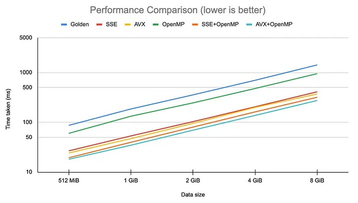
История из жизни: нам к сожалению никуда не уйти от конфигов, а стремление сделать редактор отзывчивым на изменение файлов или добавить hotreload, приводят к тому, что на загрузке уровня приходится работать со строками, сравнивать их и как-то обрабатывать, привело к созданию оптимизированных функций, где все это упаковано в sse инструкции. Результат не заставил себя долго ждать, время загрузки уровней в редакторе сократилось с 8 до 5 минут.
Предзагрузка данных (Prefetching)
Явная загрузка данных в кэш и создание алгоритмов, спроектированных для активного использование кэша процессора, до их использования помогает сократить задержки при выборке данных, особенно в приложениях, зависящих от памяти.
Код бенчмарка
void NoPrefetch(benchmark::State& state) {
int range = state.range(0);
std::vector<int> data(range, 1);
for (auto _ : state) {
long sum = 0;
for (int i = 0; i < range;) {
sum += data[i];
i += 64 + rand() % 5;
}
benchmark::DoNotOptimize(sum);
}
}
BENCHMARK(NoPrefetch)->Arg(5<<20);
void WithPrefetch(benchmark::State& state) {
int range = state.range(0);
std::vector<int> data(range, 1);
auto *ptr = data.data();
for (auto _ : state) {
long sum = 0;
int prefetch_distance = 64;
int i = 0;
for (int i = 0; i < range;) {
sum += data[i];
i += 64 + rand() % 5;
_mm_prefetch(reinterpret_cast<const char*>(ptr + i),
_MM_HINT_T0);
}
benchmark::DoNotOptimize(sum);
}
}
BENCHMARK(WithPrefetch)->Arg(5<<20);Prefetching — это указание процессору (которое он может не принимать во внимание) для повышения производительности выполнения, заключающаяся в предварительном указании адресов, к которым будет обращение. Процессоры по разному используют эти данные, intel например фактически подгружает эти данные в кеши L1/L2. AMD добавляет эти адреса в блок предсказания, и когда процессору потребуются эти данные, они уже будут доступны в одном из кэшей, а не будут загружаться из более медленной основной памяти.
Prefetching уменьшает задержку, и время затрачиваемое на операции выборки данных, позволяя более эффективно использовать возможности выполнения процессора. Эта оптимизация используется в алгоритмах, где паттерны доступа к данным предсказуемы, например обход массивов с шагом переменной но известной длины, операции над матрицами или доступ к данным класса, когда предполагается их активное использование, но они находятся не в пределах нескольких кешлиний.
---------------------------------------------------------------
Benchmark Time CPU Iterations
---------------------------------------------------------------
NoPrefetch/5242880 6829454 ns 6835938 ns 112
WithPrefetch/5242880 3624027 ns 3613281 ns 160А тут можно почитать про Cache-friendly associative container и про него же еще тут про влияние предзагрузки на время поиска в линейном массиве
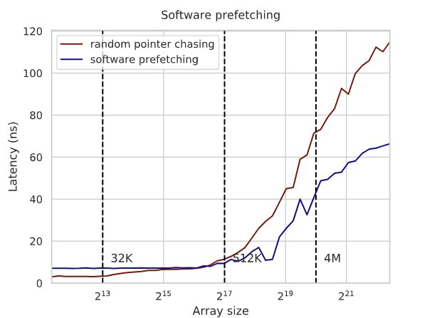
История из жизни: вот эти все разноцветные цвета на скриншоте ниже это объекты сцены, которые лежат в линейном массиве размером 65к. Объекты произвольного типа, от эффектов до моделей персонажей и пропсов. У каждого объекта есть набор компонентов и свойств, их десятки. Размеры стуктур в памяти десятки килобайт, так что никаких кэшей не хватит. Применение фильтров и поиск объектов на сцене становится затратной задачей и занимает секунды реального времени, знание адресов на которые придется следующее обращение и возможность загрузить эти данные в кэш до обращения к ним снижает время поиска до сотен миллисекунд.
Скриншот сцены
Сonstexpr вычисления
Вычисления, отмеченные как constexpr, выполняются на этапе компиляции, что позволяет выполнять константы и вычисления эффективно в офлайне, устраняя вычисления во время выполнения. В нашем движке используется целая библиотека с большим числом общеиспользуемых математических и тригонометрических функций. В движке используется где возможно, вынося все вычисления времени выполнения в константы. Классический пример на вычисление факториала, но там может быть любой код в принципе, например вычисление контрольных сумм, или cos(34*) в виде констант.
Код бенчмарка
constexpr int factorial(int n) {
return (n <= 1) ? 1 : (n * factorial(n - 1));
}
int runtime_factorial(int n) {
return (n <= 1) ? 1 : (n * runtime_factorial(n - 1));
}
static void BM_ConstexprFactorial(benchmark::State& state) {
for (auto _ : state) {
constexpr int factorial_10 = factorial(10);
benchmark::DoNotOptimize(factorial_10);
}
}
BENCHMARK(BM_ConstexprFactorial);
static void BM_RuntimeFactorial(benchmark::State& state) {
for (auto _ : state) {
const int factorial_10 = runtime_factorial(10);
benchmark::DoNotOptimize(factorial_10);
}
}
BENCHMARK(BM_RuntimeFactorial);----------------------------------------------------------------
Benchmark Time CPU Iterations
----------------------------------------------------------------
BM_ConstexprFactorial 1.40 ns 1.35 ns 497777778
BM_RuntimeFactorial 18.7 ns 18.8 ns 37333333История из жизни: я уже рассказывал зачем в sdk nintendo switch несколько разных имплементаций sin, исследование кода при портировании игр на эту платформу выявило затратность использования тригонометрических функций по сравнению пк, особенно в режиме отладки. В процессе доработки сначала в constexpr были вынесены sin/cos, потом tan/logn, а затем и вообще все общеупотребимые математические функции. Со временем образовалась библиотека математических функций, которые могут заместить константы и часть рантайм вычислений.
Код библиотеки
template<typename T>
constexpr T cos_impl(const T x) noexcept { return ( T(1) - x * x) / (T(1) + x * x ); }
template<typename T>
constexpr T _cos(const T x) noexcept {
return ( _isnan(x)
? numeric_limits<T>::quiet_NaN()
: (numeric_limits<T>::zero() > ctl::_abs(x))
? T(1) // indistinguishable from 0
: (numeric_limits<T>::zero() > ctl::_abs(x - T(const_half_pi)))
? T(0) // special cases: pi/2 and pi
: (numeric_limits<T>::zero() > ctl::_abs(x + T(const_half_pi)))
? T(0)
: (numeric_limits<T>::zero() > ctl::_abs(x - T(const_pi)))
? -T(1)
: (numeric_limits<T>::zero() > ctl::_abs(x + T(const_pi)))
? -T(1)
: cos_impl( detail_tan::_tan(x / T(2)) ) );
}Вот тут еще можно почитать про развитие constexpr вычислений в плюсах от PVS
Алгоритмы без блокировок (Lock free algo)
Программирование без блокировок — это парадигма многопоточного программирования, которая концентрируется на создании отдельного вида алгоритмов, которые, не используют механизмы синхронизации для доступа к общим ресурсам. Ключевой концепцией такого подхода будет использование атомарных операций, которые либо полностью выполняются, либо не выполняются за одну операцию процессора и способны гарантировать целостность своего состояния между несколькими потоками. Это устраняет проблемы взаимных блокировок, зацикливания и другие, которые возникают при использовании примитивов синхронизации. По опыту использования в реальных проектах, применить удалось несколько раз, прирост был не сильно большой, а багов добавило прилично. Зачастую использование мьютекса обходится намного дешевле и быстрее по времени, если вы конечно не извлекаете миллиарды записей из дампа.
Код бенчмарка
std::atomic<int> atomic_counter;
std::mutex counter_mutex;
int locked_counter;
void atomic_inc(int inc) {
for (int i = 0; i < inc; ++i) {
atomic_counter++;
}
}
void mutex_inc(int inc) {
for (int i = 0; i < inc; ++i) {
std::lock_guard<std::mutex> lock(counter_mutex);
locked_counter++;
}
}
static void BM_AtomicInc(benchmark::State& state) {
for (auto _ : state) {
atomic_inc(state.range(0));
}
}
BENCHMARK(BM_AtomicInc)->Arg(10000);
static void BM_MutexInc(benchmark::State& state) {
for (auto _ : state) {
mutex_inc(state.range(0));
}
}
BENCHMARK(BM_MutexInc)->Arg(10000);Использование атомарных операций для достижения параллелизма в алгоритмах без использования блокировок, устраняет накладные расходы и потенциальные блокировки, связанные с примитивами синхронизации. Очень скользкая тема, потому что написать код без блокировок достаточно сложно, учесть все кейсы когда он не будет работать еще сложнее, а профит при распараллеливании такого алгоритма уменьшается при использовании таких шаблонов, как частичная обработка.
-------------------------------------------------------------
Benchmark Time CPU Iterations
-------------------------------------------------------------
BM_AtomicInc/10000 51188 ns 50815 ns 14452
BM_MutexInc/10000 164190 ns 163240 ns 3733На картинке вероятность взятия лока, при использовании мьютекса и различных вариантов спинлока от времени между пробами. А вот тут хорошая статья по lock-free map
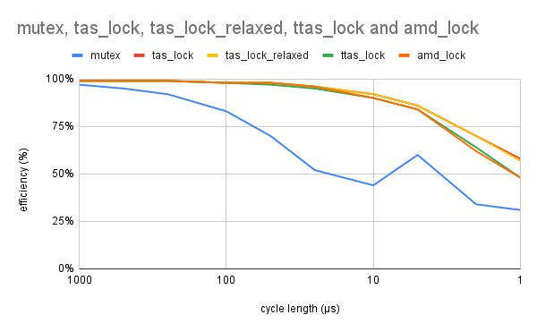
История из жизни: На одном из проектов, еще до игростроя, объем данных от аппаратуры мог составлять несколько десятков миллионов однотипных объектов, POD данные, объекты могут ссылаться друг на друга, все объекты приходят скопом, удаляются также. В таких условиях динамическое управление памятью приводит к очень большим потерям времени на создание/удаление объектов. Без отладчика создание/обработка/удаление происходило за несколько секунд, но под студией освобождение памяти замедлялось настолько, что отлаживать становилось просто нереально. Помимо времени, из-за большого числа аллокаций ощутимо становился расход памяти на технические данные аллокатора. Для работы с таким типом объектов был сделан особый lock-free контейнер с BumpAllocator, который выделял память большими сегментами и уже там размещал объекты по индексам. Количество объектов гарантированно меньше 65 млн, для каждого треда был выделен собственный сегмент в котором шла обработка и размещение данных. На x64 выделение 60 миллионов элементов в 12 потоках с помощью такого аллокатора выполнялось на i7 3GHz примерно за 400 мс, освобождение за 170 мс. Выделение с помощью new происходило примерно за 2000 мс.
Обучение блока предсказаний (Warming BPU)
Теоретически возможно запустить перед основным алгоритмом простой обучающий, но который содержит все основные ветвления большого алгоритма. Настроив BPU на соответствующую конфигурацию, можно запускать уже алгоритм с данными, и тот будет работать быстрее. Есть очень интересная статья на эту тему. Спорная оптимизация, у меня было всего пару раз на практике, где требовался такой вид микро оптимизаций, и в одном алгоритме и железе он работал, а в другом нет. Хорошего примера для бенчмарка я так и не смог придумать, так что если будут предложения, пишите в коментах, дополню статью с указанием авторства.
Встраивание кода функций (Inlining)
Компилятор включает все тело функции в каждой точке её вызова, уменьшая накладные расходы на вызов функции и позволяя компилятору выполнять дальнейшую оптимизацию. Хорошо звучит на бумаге, но на практике наталкивается на большое число ограничений, таких как размер блока инлайнинга, размер самого тела встраиваемой функции, разбухание кода исполняемого файла. Опять же спорная рекомендация, потому что компилятор намного «осведомлённее чего он там накомпилил» любого оптимизатора между ушей, и учитывает множество факторов, о которых человек может не подозревать, таких например как частоту вызова функции, внутренний объем инструкций и их зависимости.
История из жизни: Мы даже как‑то проводили эксперимент, просто отключили все inline через макрос — на профайлере изменения были в пределах погрешностей, и даже код части функций, который выбрали для анализа, не изменился. За исключением нескольких особо горячих участков, где мы были уверены и пользовались __forceinline атрибутами, в остальных местах сам компилятор справляется с этой задачей лучше всех.
Кеширование данных (Short-circuiting cache)
Кеш представляет собой аппаратный или программный объект, который хранит некоторое подмножество данных, (временно хранит, или по каким то условиям), чтобы будущие запросы к этим данным могли обслуживаться быстрее. Данные, к которым недавно или часто обращались, буду храниться в кэше и все последующие чтения или записи этих данных будут выполнены значительно быстрее. Хранение данных ближе к процессору или потребителям снижает задержку и улучшает общую эффективность и общую производительность системы. Кеши реализуются на различных уровнях архитектуры, но не ограничиваясь процессорами: кэши процессора (L1, L2, L3), дисковые кэши, сетевые, текстур, звуков, моделей, геометрии и т.д.
Термины «попадание в кэш» и «промах в кэше» относятся к эффективности извлечения данных из него. Попадание — когда запрос данных может быть удовлетворен кэшем, что исключает необходимость обращения к более медленному, основному хранилищу данных, будь то основная память, дисковое хранилище или удаленный сервер. Это приводит к более быстрому времени отклика и меньшему использованию ресурсов для конкретной операции с данными. Напротив, промах в кэше требует извлечения данных из более медленного хранилища для удовлетворения текущего запроса и обновления кэша. Промахи в кэше, обычно более затратны с точки зрения времени и вычислительных ресурсов, но положительное влияние использования кэша на общую архитектуру с лихвой перекрывает такие затраты.
Промахи могут происходить по различным причинам, включая первичный доступ к данным (холодный старт), вытеснение данных из-за ограничений размера или неэффективную стратегию управления.
Соотношение попаданий к общему числу попыток доступа часто используется как основной показатель для оценки эффективности разработанной системы кеширования, и этот же показатель используется в игровых движках для оценки общего состояния систем. Заполненность кэша и частота промахов, указывает на наличие ошибок в архитектуре систем, которые им пользуются.
Бенчмарков не будет, зато есть вот такая познавательная картинка со средним временем доступа к кэшам разного уровня. А еще кэш можно отравить неправильными данными.
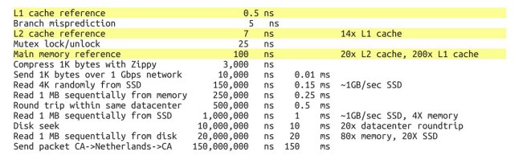
История из жизни: на Nintendo Switch, из-за особенностей работы с sd картой, есть специальный класс в сдк, называется SDFileCache. Ему дается дается имя файла, после срабатывания колбека можно начинать вычитывать данные, пока идет вычитывание и обработка этот класс подкачивает данные из sd карты, что позволяет практически непрерывно и быстро вычитать весь файл. Если же напрямую открыть этот файл на карте и попытаться его также прочитать, то ловим фризы при подходе к границе 256кб, т.е. вычитали буфер, ОС потупила, опять его заполнила, опять вычитали. На профайлере это выглядело как context switch между тредами.
Это все работает?
Все эти шаблоны проектирования, оптимизаций и микрооптимизаций с той или иной долей успеха были обкатаны на рабочих движках, и я попробовал собрать их в виде списка с простыми и понятными примерами. Это никак не отменяет необходимость знания и применения подходящих для конкретной задачи структур данных и алгоритмов. Никакой самый быстрый проц не вывезет алгоритм с O(n!^2). Надеюсь удалось показать вам немного путей для улучшения производительности, казалось бы уже там, где выжать еще немного перформанса уже не выйдет. И там где было 20 фпс, становится и 30, и 40, даже 60.
← Все статьи